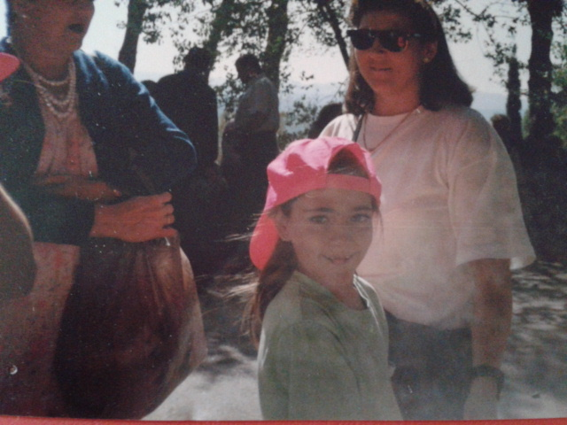

Mis Proyectos

Proyecto 1
Descripción breve de tu proyecto 1.

Proyecto 2
Descripción breve de tu proyecto 2.

Proyecto 3
Descripción breve de tu proyecto 3.

Proyecto 4
Descripción breve de tu proyecto 4.
Iluminadora / Artista visual / Creativa

Ajo Domínguez es iluminadora y artista visual nacida en Andalucía, sur de España. Entre 2005 y 2007 se formó como técnica en construcción escenográfica e iluminación teatral en el Centro de Formación Escénica de Andalucía (Granada y Sevilla). En 2011 cursó la Diplomatura en Dirección de Fotografía y Cámara de Cine en la escuela Bande à Part (Barcelona).
Durante varios años trabajó en el ámbito audiovisual y escénico como video-asistente, ayudante de cámara y técnica eléctrica en cine y televisión, compaginando esta actividad con su trabajo como técnica de iluminación en teatro, danza y música.
En 2017 realizó el Máster en Dirección de Proyectos Culturales en Fundación Contemporánea (Madrid) y colaboró con la asociación de cine y fotografía documental Nomadocs en el desarrollo del proyecto Across the Rivers. En 2019 retomó plenamente su oficio como iluminadora al incorporarse a la empresa Intervento, donde se especializó en iluminación de exposiciones y espacios instalativos. Participó en proyectos en instituciones como el CCCB (Centro de Cultura Contemporánea de Barcelona) y en exposiciones de gran escala como Banksy Exhibition (DHub, Museo del Diseño de Barcelona) y Amazonía de Sebastião Salgado (Museo Marítimo de Barcelona).
Actualmente desarrolla una práctica que articula su experiencia profesional en iluminación con una investigación artística centrada en la fotografía experimental, el ensayo visual/sonoro y la luz entendida no solo como herramienta técnica, sino como materia y agente activo dentro del proceso creativo. Esta línea comenzó a consolidarse tras su participación en la Residencia Artística Manu Candela (Galápagos, Ecuador, 2025).
Su investigación explora la relación entre luz, territorio y memoria a través de procesos fotosensibles de fotografía experimental. Desde una perspectiva ecofeminista situada en el contexto del Antropoceno, trabaja con técnicas históricas como la antotipia, solarigrafía, clorotipia y cianotipia, utilizando materiales orgánicos y registros del entorno.
Su práctica se desarrolla en residencias artísticas y en su propio laboratorio de investigación ANALOG LAV_, concebido como un espacio de experimentación donde imagen, sonido y materia dialogan para indagar en los vínculos entre cuerpos y territorios, atendiendo a sus procesos de vulneración, resistencia y transformación. Su trabajo incorpora imágenes de mujeres, árboles y flora autóctona documentadas durante sus viajes, junto con registros sonoros y ecos de sus voces.
Puedes ver mis trabajos más abajo o contactarme a través de correo electrónico.
Descripción breve de tu proyecto 1.
Descripción breve de tu proyecto 2.
Descripción breve de tu proyecto 3.
Descripción breve de tu proyecto 4.